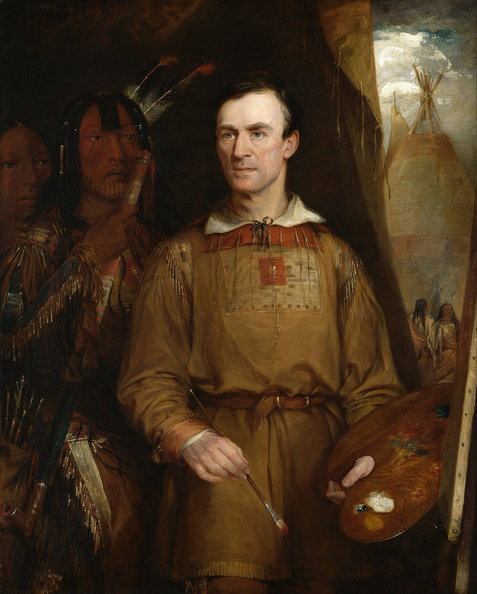
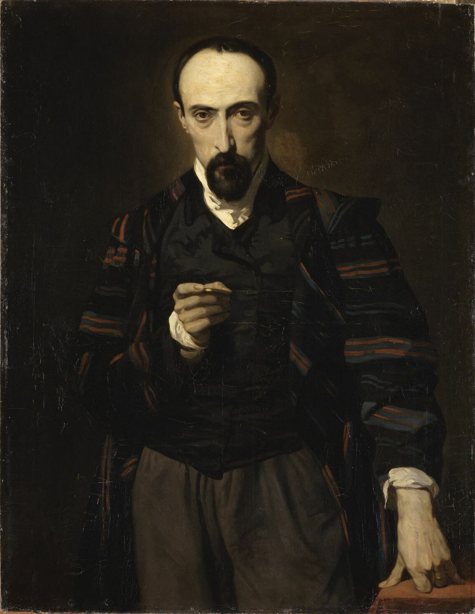
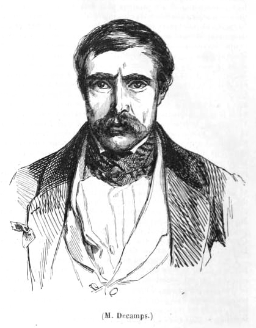
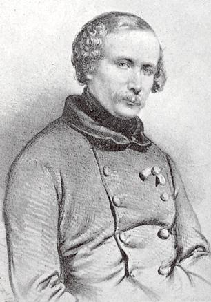
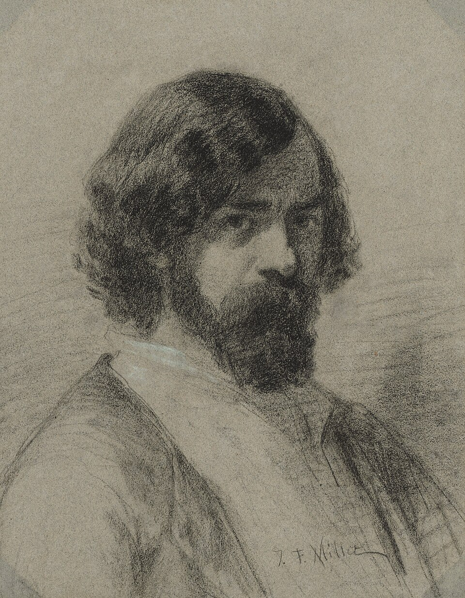
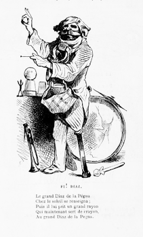
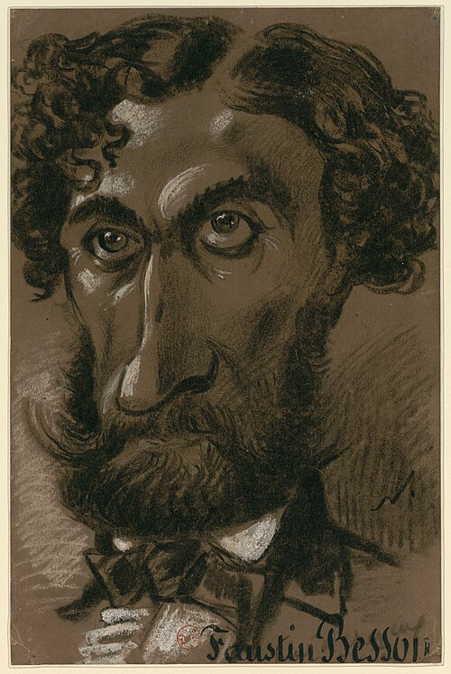
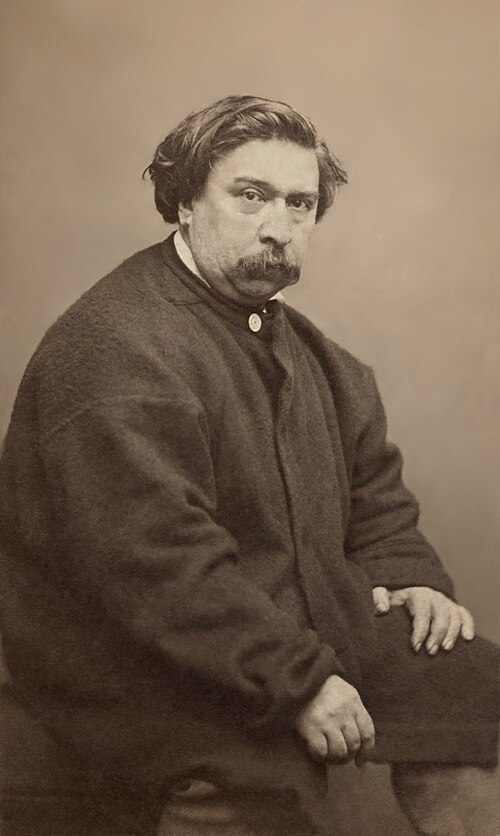
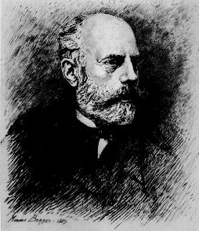

Salon of 1846
On Some Colourists
De quelques coloristes
Il y a au Salon deux curiosités assez importantes : ce sont les portraits de Petit Loup et de Graisse du dos de buffle , peints par M. Catlin , le cornac des sauvages. Quand M. Catlin vint à Paris, avec ses Ioways et son musée, le bruit se répandit que c’était un brave homme qui ne savait ni peindre ni dessiner, et que s’il avait fait quelques ébauches passables, c’était grâce à son courage et à sa patience. Était-ce ruse innocente de M. Catlin ou bêtise des journalistes ? — Il est aujourd’hui avéré que M. Catlin sait fort bien peindre et fort bien dessiner. Ces deux portraits suffiraient pour me le prouver, si ma mémoire ne me rappelait beaucoup d’autres morceaux également beaux. Ses ciels surtout m’avaient frappé à cause de leur transparence et de leur légèreté.
There are two fairly important curiosities at the Salon: the portraits of Little Wolf and Buffalo Back Fat, painted by M. Catlin, the keeper of the savages. When M. Catlin came to Paris with his Iowas and his museum, the rumor spread that he was a good fellow who could neither paint nor draw, and that if he had produced a few passable sketches it was thanks only to courage and patience. Was this an innocent ruse on M. Catlin's part, or the stupidity of journalists? It is now established that M. Catlin paints very well and draws very well. These two portraits alone would prove it to me, even if my memory did not recall many other equally beautiful pieces. His skies above all had struck me by their transparency and lightness.

M. Catlin a supérieurement rendu le caractère fier et libre, et l’expression noble de ces braves gens ; la construction de leur tête est parfaitement bien comprise. Par leurs belles attitudes et l’aisance de leurs mouvements, ces sauvages font comprendre la sculpture antique. Quant à la couleur, elle a quelque chose de mystérieux qui me plaît plus que je ne saurais dire. Le rouge, la couleur du sang, la couleur de la vie, abondait tellement dans ce sombre musée, que c’était une ivresse ; quant aux paysages, — montagnes boisées, savanes immenses, rivières désertes, — ils étaient monotonement, éternellement verts ; le rouge, cette couleur si obscure, si épaisse, plus difficile à pénétrer que les yeux d’un serpent, — le vert, cette couleur calme et gaie et souriante de la nature, je les retrouve chantant leur antithèse mélodique jusque sur le visage de ces deux héros. — Ce qu’il y a de certain, c’est que tous leurs tatouages et coloriages étaient fait selon les gammes naturelles et harmoniques.
M. Catlin has rendered superbly the proud and free character, and the noble expression, of these brave men; the construction of their heads is perfectly understood. Through their fine attitudes and ease of movement these ‘savages’ help us understand antique sculpture. As for the color, it has something mysterious that pleases me more than I can say. Red, the color of blood, the color of life, abounded so much in that somber museum that it was intoxicating; the landscapes—wooded mountains, immense savannas, deserted rivers—were monotonously and eternally green. Red, that obscure, dense color, harder to penetrate than a serpent's eyes, and green, nature's calm, cheerful, smiling color, sing their melodious antithesis even on the faces of these two heroes. One thing is certain: all their tattoos and coloring followed natural and harmonious scales.
Je crois que ce qui a induit en erreur le public et les journalistes à l’endroit de M. Catlin, c’est qu’il ne fait pas de peinture crâne , à laquelle tous nos jeunes gens les ont si bien accoutumés, que c’est maintenant la peinture classique .
I think what misled the public and the journalists about M. Catlin is that he does not make swaggering painting, the kind to which our young men have accustomed them so thoroughly that it has now become classical painting.
L’an passé, j’ai déjà protesté contre le De profundis unanime, contre la conspiration des ingrats, à propos de MM. Devéria. Cette année-ci m’a donné raison. Bien des réputations précoces qui leur ont été substituées ne valent pas encore la leur. M. Achille Devéria surtout s’est fait remarquer au Salon de 1846 par un tableau, le Repos de la sainte Famille , qui non seulement conserve toute la grâce particulière à ces charmants et fraternels génies, mais encore rappelle les sérieuses qualités des anciennes écoles ; — des écoles secondaires peut-être, qui ne l’emportent précisément ni par le dessin ni par la couleur, mais que l’ordonnance et la belle tradition placent néanmoins bien au-dessus des dévergondages propres aux époques de transition. Dans la grande bataille romantique, MM. Devéria firent partie du bataillon sacré des coloristes ; leur place était donc marquée ici. — Le tableau de M. Achille Devéria, dont la composition est excellente, frappe en outre l’esprit par un aspect doux et harmonieux.
Last year I already protested against the unanimous De profundis, the conspiracy of ingrates, concerning the Devéria brothers. This year has proved me right. Many premature reputations substituted for theirs do not yet equal them. M. Achille Devéria especially distinguished himself at the Salon of 1846 with a painting, The Rest of the Holy Family, which not only preserves all the grace peculiar to those charming and fraternal talents but also recalls the serious qualities of the older schools—secondary schools perhaps, outstanding neither for drawing nor color, but whose ordering and fine tradition nevertheless place them far above the excesses characteristic of periods of transition. In the great Romantic battle, the Devéria brothers belonged to the sacred battalion of colorists; their place was therefore marked out here. M. Achille Devéria's painting, whose composition is excellent, also impresses the mind by a gentle and harmonious appearance.
M. Boissard , dont les débuts furent brillants aussi et pleins de promesses, est un de ces esprits excellents nourris des anciens maîtres ; sa Madeleine au désert est une peinture d’une bonne et saine couleur, — sauf les tons des chairs un peu tristes. La pose est heureusement trouvée.
M. Boissard, whose beginnings were likewise brilliant and full of promise, is one of those excellent minds nourished on the old masters; his Magdalen in the Desert is painted in good, healthy color, except for the flesh tones, which are somewhat sad. The pose is happily found.
Dans cet interminable Salon, où plus que jamais les différences sont effacées, où chacun dessine et peint un peu, mais pas assez pour mériter même d’être classé, — c’est une grande joie de rencontrer un franc et vrai peintre, comme M. Debon . Peut-être son Concert dans l’atelier est-il un tableau un peu trop artistique, Valentin, Jordaens et quelques autres y faisant leur partie ; mais au moins c’est de la belle et bien portante peinture, et qui indique dans l’auteur un homme parfaitement sûr de lui-même.
In this interminable Salon, where differences are more effaced than ever, where everyone draws and paints a little but not enough even to deserve classification, it is a great joy to meet a frank and genuine painter like M. Debon. Perhaps his Concert in the Studio is a little too artful a painting, with Valentin, Jordaens, and several others all playing their parts; but at least it is beautiful, healthy painting and shows in its author a man perfectly sure of himself.
M. Duveau a fait le Lendemain d’une tempête . J’ignore s’il peut devenir un franc coloriste, mais quelques parties de son tableau le font espérer. — Au premier aspect, l’on cherche dans sa mémoire quelle scène historique il peut représenter. En effet, il n’y a guère que les Anglais qui osent donner de si vastes proportions au tableau de genre. — Du reste, il est bien ordonné, et paraît généralement bien dessiné. — Le ton un peu trop uniforme, qui choque d’abord l’œil, est sans doute un effet de la nature, dont toutes les parties paraissent singulièrement crues, après qu’elles ont été lavées par les pluies.
M. Duveau has painted The Day After a Storm. I do not know whether he can become a genuine colorist, but parts of his picture give reason to hope so. At first glance one searches one's memory for the historical scene it might represent. Indeed, scarcely anyone but the English dares give such vast dimensions to a genre picture. Otherwise it is well ordered and seems generally well drawn. The slightly too uniform tone that first shocks the eye is doubtless an effect of nature, all of whose parts appear singularly raw after being washed by rain.
La Charité de M. Laemlein est une charmante femme qui tient par la main, et porte suspendus à son sein, des marmots de tous les climats, blancs, jaunes, noirs, etc… Certainement, M. Laemlein a le sentiment de la bonne couleur ; mais il y a dans ce tableau un grand défaut, c’est que le petit Chinois est si joli, et sa robe d’un effet si agréable qu’il occupe presque uniquement l’œil du spectateur. Ce petit mandarin trotte toujours dans la mémoire, et fera oublier le reste à beaucoup de gens.
M. Laemlein's Charity is a charming woman who holds by the hand, and carries suspended at her breast, little children from every climate—white, yellow, black, and so on. M. Laemlein certainly has a feeling for good color; but the painting has one great defect: the little Chinese boy is so pretty, and his robe produces such a pleasing effect, that he almost monopolizes the spectator's eye. That little mandarin keeps trotting through the memory and will make many people forget the rest.



M. Decamps est un de ceux qui, depuis de nombreuses années, ont occupé despotiquement la curiosité du public, et rien n’était plus légitime.
M. Decamps is one of those who for many years have despotically occupied the public's curiosity, and nothing could have been more legitimate.
Cet artiste, doué d’une merveilleuse faculté d’analyse, arrivait souvent, par une heureuse concurrence de petits moyens, à des résultats d’un effet puissant. — S’il esquivait trop le détail de la ligne, et se contentait souvent du mouvement ou du contour général, si parfois ce dessin frisait le chic, — le goût minutieux de la nature, étudiée surtout dans ses effets lumineux, l’avait toujours sauvé et maintenu dans une région supérieure.
This artist, endowed with a marvelous faculty of analysis, often arrived, through a fortunate concurrence of small means, at results of powerful effect. If he avoided too much the detail of line and was often content with movement or general contour, if at times his drawing came close to chic, his minute taste for nature—studied above all in its effects of light—always saved him and kept him in a higher region.
Si M. Decamps n’était pas précisément un dessinateur, dans le sens du mot généralement accepté, néanmoins il l’était à sa manière et d’une façon particulière. Personne n’a vu de grandes figures dessinées par lui ; mais certainement le dessin, c’est-à-dire la tournure de ses petits bonshommes, était accusé et trouvé avec une hardiesse et un bonheur remarquables. Le caractère et les habitudes de leurs corps étaient toujours visibles ; car M. Decamps sait faire comprendre un personnage avec quelques lignes. Ses croquis étaient amusants et profondément plaisants. C’était un dessin d’homme d’esprit, presque de caricaturiste ; car il possédait je ne sais quelle bonne humeur ou fantaisie moqueuse, qui s’attaquait parfaitement aux ironies de la nature : aussi ses personnages étaient-ils toujours posés, drapés ou habillés selon la vérité et les convenances et coutumes éternelles de leur individu. Seulement il y avait dans ce dessin une certaine immobilité, mais qui n’était pas déplaisante et complétait son orientalisme. Il prenait d’habitude ses modèles au repos, et quand ils couraient ils ressemblaient souvent à des ombres suspendues ou à des silhouettes arrêtées subitement dans leur course ; ils couraient comme dans un bas-relief. — Mais la couleur était son beau côté, sa grande et unique affaire. Sans doute M. Delacroix est un grand coloriste, mais non pas enragé. Il a bien d’autres préoccupations, et la dimension de ses toiles le veut ; pour M. Decamps, la couleur était la grande chose, c’était pour ainsi dire sa pensée favorite. Sa couleur splendide et rayonnante avait de plus un style très-particulier. Elle était, pour me servir de mots empruntés à l’ordre moral, sanguinaire et mordante. Les mets les plus appétissants, les drôleries cuisinées avec le plus de réflexion, les produits culinaires le plus âprement assaisonnés avaient moins de ragoût et de montant, exhalaient moins de volupté sauvage pour le nez et le palais d’un gourmand, que les tableaux de M. Decamps pour un amateur de peinture. L’étrangeté de leur aspect vous arrêtait, vous enchaînait et vous inspirait une invincible curiosité. Cela tenait peut-être aux procédés singuliers et minutieux dont use souvent l’artiste, qui élucubre, dit-on, sa peinture avec la volonté infatigable d’un alchimiste. L’impression qu’elle produisait alors sur l’âme du spectateur était si soudaine et si nouvelle, qu’il était difficile de se figurer de qui elle est fille, quel avait été le parrain de ce singulier artiste, et de quel atelier était sorti ce talent solitaire et original. — Certes, dans cent ans, les historiens auront du mal à découvrir le maître de M. Decamps. — Tantôt il relevait des anciens maître les plus hardiment colorés de l’Ecole flamande ; mais il avait plus de style qu’eux et il groupait ses figures avec plus d’harmonie ; tantôt la pompe et la trivialité de Rembrandt le préoccupaient vivement ; d’autres fois on retrouvait dans ses ciels un souvenir amoureux des ciels du Lorrain. Car M. Decamps était paysagiste aussi, et paysagiste du plus grand mérite : ses paysages et ses figures ne faisaient qu’un et se servaient réciproquement. Les uns n’avaient pas plus d’importance que les autres, et rien chez lui n’était accessoire ; tant chaque partie de la toile était travaillée avec curiosité, tant chaque détail était destiné à concourir à l’effet de l’ensemble ! — Rien n’était inutile, ni le rat qui traversait un bassin à la nage dans je ne sais quel tableau turc, plein de paresse et de fatalisme, ni les oiseaux de proie qui planaient dans le fond de ce chef-d’œuvre intitulé : le Supplice des crochets .
If M. Decamps was not precisely a draughtsman in the generally accepted sense of the word, he nevertheless was one in his own way and in a particular fashion. No one has seen large figures drawn by him; but certainly the drawing—that is, the bearing—of his little people was defined and discovered with remarkable boldness and success. The character and habits of their bodies were always visible, for M. Decamps could make a person understood with a few lines. His sketches were amusing and profoundly pleasant. It was the drawing of a man of wit, almost a caricaturist; for he possessed a certain good humor or mocking fantasy that perfectly seized upon nature's ironies. His figures were therefore always posed, draped, or dressed according to the truth and the eternal proprieties and customs of their individuality. There was only a certain immobility in this drawing, but it was not unpleasant and completed his Orientalism. He usually took his models at rest, and when they ran they often resembled suspended shadows or silhouettes suddenly arrested in their course; they ran as in a bas-relief. But color was his great side, his great and unique concern. Delacroix is certainly a great colorist, but not a maniacal one; he has many other concerns, and the dimensions of his canvases require it. For M. Decamps, color was the great thing, almost his favorite thought. His splendid and radiant color also had a very particular style. To borrow words from the moral order, it was bloodthirsty and biting. The most appetizing dishes, the comic delicacies prepared with the greatest thought, the most sharply seasoned culinary products had less savor and pungency, breathed less savage delight for a gourmet's nose and palate, than M. Decamps's paintings did for a lover of painting. Their strange appearance stopped you, chained you, and inspired an irresistible curiosity. Perhaps this came from the peculiar and meticulous procedures the artist often used, laboring over his painting, people say, with the indefatigable will of an alchemist. The impression it produced on the spectator's soul was then so sudden and so new that it was hard to imagine whose child it was, who had been godfather to this singular artist, and from what studio this solitary and original talent had emerged. In a hundred years, historians will surely have trouble discovering M. Decamps's master. At times he recalled the most boldly colored old masters of the Flemish school, but he had more style than they and grouped his figures with greater harmony; at times the pomp and triviality of Rembrandt preoccupied him strongly; elsewhere one rediscovered in his skies an affectionate memory of Claude Lorrain's skies. For M. Decamps was also a landscape painter, and one of the greatest merit: his landscapes and figures formed a single thing and served one another reciprocally. Neither was more important than the other, and nothing with him was accessory; so curiously was every part of the canvas worked, so completely was every detail intended to contribute to the effect of the whole. Nothing was useless: neither the rat swimming across a pool in some Turkish picture full of laziness and fatalism, nor the birds of prey circling in the background of that masterpiece entitled The Punishment of the Hooks.
Le soleil et la lumière jouaient alors un grand rôle dans la peinture de M. Decamps. Nul n’étudiait avec autant de soin les effets de l’atmosphère. Les jeux les plus bizarres et les plus invraisemblables de l’ombre et de la lumière lui plaisaient avant tout. Dans un tableau de M. Decamps, le soleil brûlait véritablement les murs blancs et les sables crayeux ; tous les objets colorés avaient une transparence vive et animée. Les eaux étaient d’une profondeur inouïe ; les grandes ombres qui coupent les pans des maisons et dorment étirées sur le sol ou sur l’eau avaient une indolence et un farniente d’ombres indéfinissables. Au milieu de cette nature saisissante, s’agitaient ou rêvaient de petites gens, tout un petit monde avec sa vérité native et comique.
Sun and light then played a great role in M. Decamps's painting. No one studied atmospheric effects with as much care. The strangest and most improbable plays of shadow and light delighted him above all. In a Decamps painting, the sun truly burned the white walls and chalky sands; every colored object had a lively, animated transparency. The waters possessed unheard-of depth; the great shadows cutting across house walls and lying stretched on the ground or water had an indefinable indolence and idleness of shadow. In the midst of this striking nature little people moved or dreamed, a whole small world with its native and comic truth.
Les tableaux de M. Decamps étaient donc pleins de poésie, et souvent de rêverie ; mais là où d’autres, comme Delacroix, arriveraient par un grand dessin, un choix de modèle original ou une large et facile couleur, M. Decamps arrivait par l’intimité du détail. Le seul reproche, en effet, qu’on lui pouvait faire, était de trop s’occuper de l’exécution matérielle des objets ; ses maisons étaient en vrai plâtre, en vrai bois, ses murs en vrai mortier de chaux ; et devant ces chefs-d’œuvre l’esprit était souvent attristé par l’idée douloureuse du temps et de la peine consacrés à les faire. Combien n’eussent-ils pas été plus beaux, exécutés avec plus de bonhomie !
M. Decamps's paintings were therefore full of poetry and often of reverie; but where others, like Delacroix, would arrive by grand drawing, a choice of original model, or broad and easy color, M. Decamps arrived through intimacy of detail. The one reproach one could make was that he occupied himself too much with the material execution of objects: his houses were real plaster and real wood, his walls real lime mortar; and before these masterpieces the mind was often saddened by the painful thought of the time and labor devoted to making them. How much more beautiful they might have been if executed with greater ease!
L’an passé, quand M. Decamps, armé d’un crayon, voulut lutter avec Raphaël et Poussin, — les flâneurs enthousiastes de la plaine et de la montagne, ceux-là qui ont un cœur grand comme le monde, mais qui ne veulent pas pendre les citrouilles aux branches des chênes, et qui adoraient tous M. Decamps comme un des produits les plus curieux de la création, se dirent entre eux : « Si Raphaël empêche Decamps de dormir, adieu nos Decamps ! Qui les fera désormais ? — Hélas ! MM. Guignet et Chacaton . »
Last year, when M. Decamps, armed with a pencil, wanted to compete with Raphael and Poussin, the enthusiastic strollers of plain and mountain—those whose hearts are as large as the world but who do not want pumpkins hung from oak branches, and who all adored M. Decamps as one of creation's most curious products—said among themselves: ‘If Raphael keeps Decamps from sleeping, farewell our Decamps! Who will make them now? Alas! MM. Guignet and Chacaton.’

Et cependant M. Decamps a reparu cette année avec des choses turques, des paysages, des tableaux de genre et un Effet de pluie ; mais il a fallu les chercher : ils ne sautaient plus aux yeux.
And yet M. Decamps has reappeared this year with Turkish things, landscapes, genre paintings, and a Rain Effect; but one had to look for them: they no longer leapt to the eye.
M. Decamps, qui sait si bien faire le soleil, n’a pas su faire la pluie ; puis il a fait nager des canards dans de la pierre, etc. L’École turque , néanmoins, ressemble à ses bons tableaux ; ce sont bien là ces beaux enfants que nous connaissons, et cette atmosphère lumineuse et poussiéreuse d’une chambre où le soleil veut entrer tout entier.
M. Decamps, who knows so well how to paint the sun, did not know how to paint rain; then he made ducks swim in stone, and so on. The Turkish School, nevertheless, resembles his good paintings; these are indeed the beautiful children we know, and that luminous, dusty atmosphere of a room into which the sun wants to enter in its entirety.
Il me paraît si facile de nous consoler avec les magnifiques Decamps qui ornent les galeries que je ne veux pas analyser les défauts de ceux-ci. Ce serait une besogne puérile, que tout le monde fera du reste très-bien.
It seems so easy to console ourselves with the magnificent Decamps that adorn galleries that I do not want to analyze the faults of these. It would be childish work, and everyone else will do it perfectly well.
Parmi les tableaux de M. Penguilly-l’Haridon , qui sont tous d’une bonne facture, — petits tableaux largement peints, et néanmoins avec finesse, — un surtout se fait voir et attire les yeux : Pierrot présente à l’assemblée ses compagnons Arlequin et Polichinelle .
Among M. Penguilly-l'Haridon's paintings, all soundly made—small pictures broadly painted and yet with delicacy—one in particular makes itself seen and attracts the eyes: Pierrot Presents His Companions Harlequin and Pulcinella to the Assembly.
Pierrot, un œil ouvert et l’autre fermé, avec cet air matois qui est de tradition, montre au public Arlequin qui s’avance en faisant les ronds de bras obligés, une jambe crânement posée en avant. Polichinelle le suit, — tête un peu avinée, œil plein de fatuité, pauvres petites jambes dans de grands sabots. Une figure ridicule, grand nez, grandes lunettes, grandes moustaches en croc, apparaît entre deux rideaux. — Tout cela est d’une jolie couleur, fine et simple, et ces trois personnages se détachent parfaitement sur un fond gris. Ce qu’il y a de saisissant dans ce tableau vient moins encore de l’aspect que de la composition, qui est d’une simplicité excessive. — Le Polichinelle, qui est essentiellement comique, rappelle celui du Charivari anglais, qui pose l’index sur le bout de son nez, pour exprimer combien il en est fier ou combien il en est gêné. Je reprocherai à M. Penguilly de n’avoir pas pris le type de Deburau, qui est le vrai pierrot actuel, le pierrot de l’histoire moderne, et qui doit avoir sa place dans tous les tableaux de parade.
Pierrot, one eye open and the other shut, with the sly look tradition requires, presents Harlequin to the public; Harlequin advances making the obligatory circles with his arms, one leg boldly placed forward. Pulcinella follows him—a slightly tipsy head, an eye full of self-satisfaction, poor little legs in great wooden shoes. A ridiculous figure, with large nose, large spectacles, and large hooked moustaches, appears between two curtains. All this is in pretty, fine, simple color, and the three figures stand out perfectly against a gray background. What is striking in the picture comes even less from its appearance than from its composition, which is extremely simple. Pulcinella, essentially comic, recalls the figure from the English Charivari who puts his forefinger on the tip of his nose, to express either how proud he is of it or how embarrassed by it. I reproach M. Penguilly for not taking Deburau as his type: he is the true Pierrot of the present day, the Pierrot of modern history, and he ought to have his place in every parade picture.

Voici maintenant une autre fantaisie beaucoup moins habile et moins savante, et qui est d’autant plus belle qu’elle est peut-être involontaire : la Rixe des mendiants , par M. Manzoni . Je n’ai jamais rien vu d’aussi poétiquement brutal, même dans les orgies les plus flamandes. — Voici en six points les différentes impressions du passant devant ce tableau : I° vive curiosité ; 2° quelle horreur ! 3° c’est mal peint, mais c’est une composition singulière et qui ne manque pas de charme ; 4° ce n’est pas aussi mal peint qu’on le croirait d’abord ; 5° revoyons donc ce tableau ; 6° souvenir durable.
Now here is another fantasy much less skillful and learned, and all the more beautiful because perhaps involuntary: The Beggars' Brawl by M. Manzoni. I have never seen anything so poetically brutal, even in the most Flemish orgies. Here, in six stages, are the impressions of a passerby before this painting: 1. lively curiosity; 2. what horror! 3. it is badly painted, but it is a strange composition not without charm; 4. it is not as badly painted as one first thought; 5. let us look at it again; 6. lasting memory.
Il y a là dedans une férocité et une brutalité de manière assez bien appropriées au sujet, et qui rappellent les violentes ébauches de Goya. — Ce sont bien du reste les faces les plus patibulaires qui se puissent voir ; c’est un mélange singulier de chapeaux défoncés, de jambes de bois, de verres cassés, de buveurs vaincus ; la luxure, la férocité et l’ivrognerie agitant leurs haillons.
There is in it a ferocity and brutality of manner rather well suited to the subject and recalling Goya's violent sketches. These are certainly the most gallows-faced faces imaginable; it is a strange mixture of battered hats, wooden legs, broken glasses, defeated drinkers—lust, ferocity, and drunkenness shaking their rags.
La beauté rougeaude qui allume les désirs de ces messieurs est d’une bonne touche , et bien faite pour plaire aux connaisseurs. J’ai rarement vu quelque chose d’aussi comique que ce malheureux collé sur le mur, et que son voisin a victorieusement cloué avec une fourche.
The ruddy beauty who inflames these gentlemen's desires is painted with a good touch and well calculated to please connoisseurs. I have rarely seen anything as comic as the poor fellow pinned against the wall, whom his neighbor has triumphantly nailed there with a pitchfork.
Quant au second tableau, l’Assassinat nocturne , il est d’un aspect moins étrange. La couleur en est terne et vulgaire, et le fantastique ne gît que dans la manière dont la scène est représentée. Un mendiant tient un couteau levé sur un malheureux qu’on fouille et qui se meurt de peur. Ces demi-masques blancs, qui consistent en des nez gigantesques, sont fort drôles, et donnent à cette scène d’épouvante un cachet des plus singuliers.
As for the second painting, The Nocturnal Murder, its appearance is less strange. Its color is dull and commonplace, and the fantastic lies only in the way the scene is represented. A beggar holds a raised knife over an unfortunate man who is being searched and is dying of fright. Those white half-masks, consisting of gigantic noses, are very funny and give this scene of terror a most singular stamp.

M. Villa-Amil a peint la Salle du trône à Madrid. On dirait au premier abord que c’est fait avec une grade bonhomie ; mais en regardant plus attentivement, on reconnaît une grande habileté dans l’ordonnance et la couleur générale de cette peinture décorative. C’est d’un ton moins fin peut-être, mais d’une couleur plus ferme que les tableaux du même genre qu’affectionne M. Roberts . Il y a cependant ce défaut que le plafond a moins l’air d’un plafond que d’un ciel véritable.
M. Villa-Amil has painted the Throne Room in Madrid. At first glance one might think it was done with great simplicity; but on looking more closely one recognizes great skill in the arrangement and general color of this decorative painting. The tone may be less delicate, but the color is firmer than in the paintings of the same sort favored by M. Roberts. There is, however, this defect: the ceiling looks less like a ceiling than a real sky.
MM. Wattier et Perèse traitent d’habitude des sujets presque semblables, de belles dames en costumes anciens dans des parcs, sous de vieux ombrages ; mais M. Perèse a cela pour lui qu’il peint avec beaucoup plus de bonhomie, et que son nom ne lui commande pas la singerie de Watteau. Malgré la finesse étudiée des figures de M. Wattier, M. Perèse lui est supérieur par l’invention. Il y a du reste entre leurs compositions la même différence qu’entre la galanterie sucrée du temps de Louis XV et la galanterie loyale du siècle de Louis XIII .
MM. Wattier and Perèse usually treat nearly similar subjects—beautiful ladies in old costumes in parks beneath ancient shade—but M. Perèse has this in his favor: he paints with much greater simplicity, and his name does not command him to imitate Watteau. Despite the studied delicacy of M. Wattier's figures, M. Perèse is superior to him in invention. There is, moreover, the same difference between their compositions as between the sugary gallantry of Louis XV's time and the loyal gallantry of the seventeenth century.
L’école Couture, — puisqu’il faut l’appeler par son nom, — a beaucoup trop donné cette année.
The Couture school—since it must be called by its name—has produced far too much this year.

M. Diaz de la Pena , qui est en petit l’expression hyperbolique de cette petite école, part de ce principe qu’une palette est un tableau. Quant à l’harmonie générale, M. Diaz pense qu’on la rencontre toujours. Pour le dessin, — le dessin du mouvement, le dessin des coloristes, — il n’en est pas question ; les membres de toutes ces petites figures se tiennent à peu près comme des paquets de chiffons ou comme des bras et des jambes dispersés par l’explosion d’une locomotive. — Je préfère le kaléidoscope, parce qu’il ne fait pas les Délaissées ou le Jardin des Amours ; il fournit des dessins de châle ou de tapis, et son rôle est modeste. — M. Diaz est coloriste, il est vrai ; mais élargissez le cadre d’un pied, et les forces lui manquent, parce qu’il ne connaît pas la nécessité d’une couleur générale. C’est pourquoi ses tableaux ne laissent pas de souvenir.
M. Diaz de la Peña, who in miniature is the hyperbolic expression of this little school, starts from the principle that a palette is a painting. As for general harmony, M. Diaz thinks one always encounters it. As for drawing—the drawing of movement, the drawing of colorists—there is no question of it; the limbs of all these little figures hang together more or less like bundles of rags or arms and legs scattered by the explosion of a locomotive. I prefer the kaleidoscope, because it does not make The Forsaken Women or The Garden of Love; it supplies patterns for shawls or carpets, and its role is modest. M. Diaz is a colorist, it is true; but enlarge the frame by a foot and his strength fails him because he does not know the necessity of a general color. That is why his paintings leave no memory.


Contemporary spoof of Díaz de la Peña, reproduced in Vetustideces, “CaricaturArte 7: el Salón de 1846 (2ª parte).”
Chacun a son rôle, dites-vous. La grande peinture n’est point faite pour tout le monde. Un beau dîner contient des pièces de résistance et des hors-d’œuvre. Oserez-vous être ingrat envers les saucissons d’Arles, les piments, les anchois, l’aïoli, etc. ? — Hors-d’œuvre appétissants, dites-vous ? — Non pas, mais bonbons et sucreries écœurantes. — Qui voudrait se nourrir de dessert ? C’est à peine si on l’effleure, quand on est content de son dîner.
Everyone has his role, you say. Great painting is not made for everyone. A fine dinner contains substantial dishes and hors d'oeuvres. Would you dare be ungrateful to Arles sausages, peppers, anchovies, aioli, and so on? Appetizing hors d'oeuvres, you say? No—sweets and cloying confections. Who would want to live on dessert? One scarcely touches it when satisfied with dinner.
M. Célestin Nanteuil sait poser une touche, mais ne sait pas établir les proportions et l’harmonie d’un tableau.
M. Célestin Nanteuil knows how to lay down a brushstroke, but not how to establish the proportions and harmony of a painting.
M. Verdier peint raisonnablement, mais je le crois foncièrement ennemi de la pensée.
M. Verdier paints reasonably, but I believe him fundamentally hostile to thought.
M. Muller , l’homme aux Sylphes , le grand amateur des sujets poétiques, — des sujets ruisselants de poésie, — a fait un tableau qui s’appelle Primavera . Les gens qui ne savent pas l’italien croiront que cela veut dire Décaméron .
M. Muller, the man of the Sylphs, the great lover of poetic subjects—subjects dripping with poetry—has made a painting called Primavera. People who do not know Italian will think it means Decameron.

La couleur de M. Faustin Besson perd beaucoup à n’être plus troublée et miroitée par les vitres de la boutique Deforge.
M. Faustin Besson's color loses a great deal now that it is no longer disturbed and reflected by the panes of the Deforge shop.

Quant à M. Fontaine , c’est évidemment un homme sérieux ; il nous a fait M. de Béranger entouré de marmots des deux sexes, et initiant la jeunesse aux mystères de la peinture Couture.
As for M. Fontaine, he is evidently a serious man; he has given us M. de Béranger surrounded by brats of both sexes and initiating youth into the mysteries of Couture painting.
Grands mystères, ma foi ! — Une lumière rose ou couleur de pêche et une ombre verte, c’est là que gît toute la difficulté. — Ce qu’il y a de terrible dans cette peinture, c’est qu’elle se fait voir ; on l’aperçoit de très-loin.
Great mysteries indeed! A pink or peach-colored light and a green shadow—that is where the whole difficulty lies. The terrible thing about this painting is that it makes itself seen; one notices it from very far away.

De tous ces messieurs, le plus malheureux sans doute est M. Couture , qui joue en tout ceci le rôle intéressant d’une victime. — Un imitateur est un indiscret qui vend une surprise.
Of all these gentlemen, the most unfortunate is doubtless M. Couture, who plays in all this the interesting role of a victim. An imitator is an indiscreet person who gives away a surprise.




Dans les différentes spécialités des sujets bas-bretons, catalans, suisses, normands, etc., MM. Armand et Adolphe Leleux sont dépassés par M. Guillemin , qui est inférieur à M. Hédouin , qui lui-même le cède à M. Haffner .
In the various specialties of Breton, Catalan, Swiss, Norman, and similar subjects, MM. Armand and Adolphe Leleux are surpassed by M. Guillemin, who is inferior to M. Hédouin, who in turn yields to M. Haffner.
J’ai entendu plusieurs fois faire à MM. Leleux ce singulier reproche que, Suisses, Espagnols ou Bretons, tous leurs personnages avaient l’air breton.
I have several times heard this curious reproach made to the Leleux brothers: whether Swiss, Spanish, or Breton, all their figures looked Breton.
M. Hédouin est certainement un peintre de mérite, qui possède une touche ferme et qui entend la couleur ; il parviendra sans doute à se constituer une originalité particulière.
M. Hédouin is certainly a painter of merit, possessing a firm touch and an understanding of color; he will doubtless succeed in establishing a particular originality of his own.
Quant à M. Haffner, je lui en veux d’avoir fait une fois un portrait dans une manière romantique et superbe, et de n’en avoir point fait d’autres ; je croyais que c’était un grand artiste plein de poésie et surtout d’invention, un portraitiste de premier ordre, qui lâchait quelques rapinades à ses heures perdues ; mais il paraît que ce n’est qu’un peintre.
As for M. Haffner, I resent him for having once made a portrait in a superb Romantic manner and never making another. I thought he was a great artist full of poetry and, above all, invention—a first-rate portraitist who tossed off a few student daubs in his spare hours; but it seems he is only a painter.